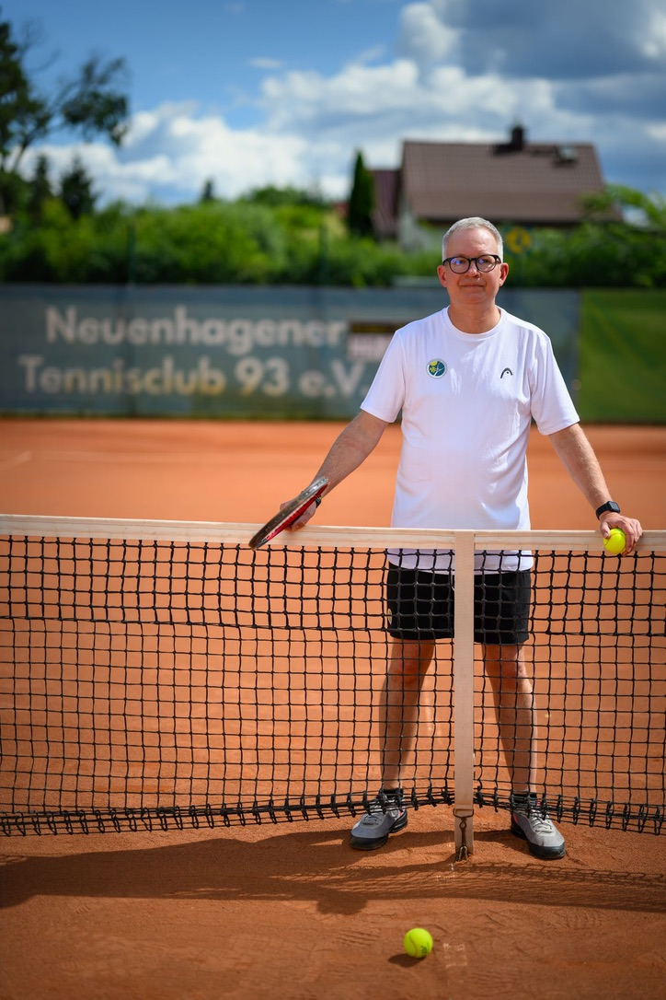

Über mich
Michael Wiedeck – Tennis ist seit mehr als drei Jahrzehnten meine Leidenschaft. Auf dem Platz, hinter den Kulissen und in der Turnierorganisation.

Ich bin seit Anfang der 1990er-Jahre im Tennis aktiv – als Spieler, Funktionär, Turnierleiter und Schiedsrichter. Was mich auszeichnet, ist die Verbindung aus sportlicher Leidenschaft, organisatorischer Erfahrung und sicherer Regelkenntnis.
Mein Weg im Tennis
- 1990–1994: KSC Strausberg / TV Strauß Strausberg
- Seit Juli 1994: Neuenhagener TC 93 e. V.
- Seit 1999: lizenzierter DTB-C-Stuhlschiedsrichter
- Seit 2016: lizenzierter DTB-B-Oberschiedsrichter
Engagement im Verein
- 2009–2010: stellvertretender Sport- und Jugendwart, NTC 93
- 2010–2016: Jugendwart, NTC 93
- 2010–2014: Mitglied der Jugendkommission des TVBB
- Seit 2020: Sportwart, NTC 93
- 2018–2025: 2. Vorsitzender, Beach Tennis Berlin e. V.
Wettkampferfahrung
Im Verein habe ich in den Junioren-, Herren- und Altersklassen gespielt und zahlreiche Mannschaftsaufstiege miterlebt. Zu meinen Erfolgen zählen Vereinsmeistertitel im Einzel, Doppel, Mixed und Beach Tennis sowie Platzierungen bei nationalen Beach-Tennis-Wettbewerben.
Auch abseits des Tennis
Bei internationalen Sport-Großveranstaltungen habe ich im Personalmanagement und in der Organisation mitgewirkt: darunter die FIFA-WM 2006, DFB-Pokal-Finals, die Leichtathletik-WM 2009 in Berlin und das UEFA Champions-League-Finale 2015. Diese Erfahrungen prägen meinen strukturierten und ruhigen Arbeitsstil.
Mein Anspruch
Ob als Turnierleiter, Oberschiedsrichter, Supervisor oder Organisator: Ich möchte Turniere professionell, fair und regelkonform gestalten – im Interesse der Spieler, Veranstalter und Verbände.